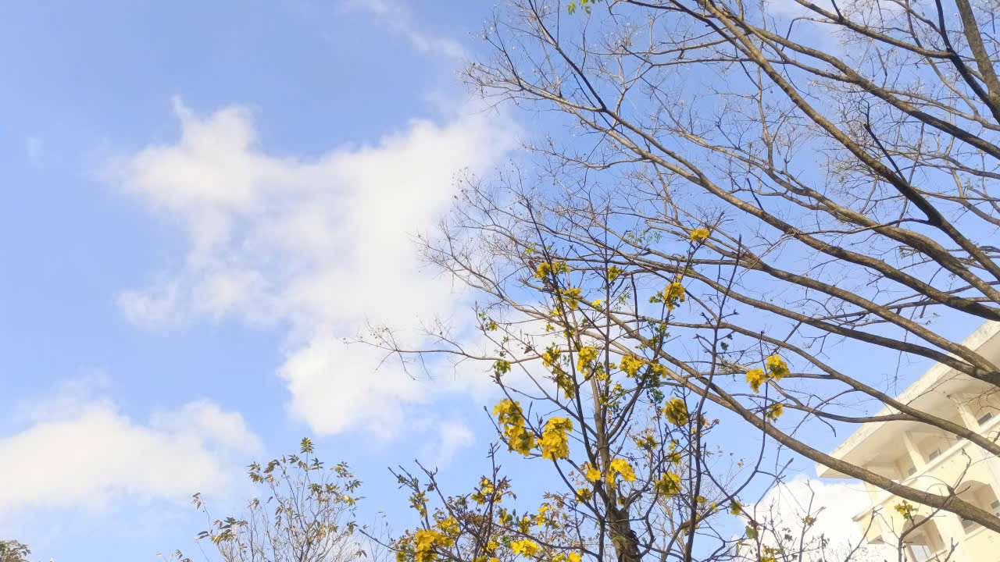
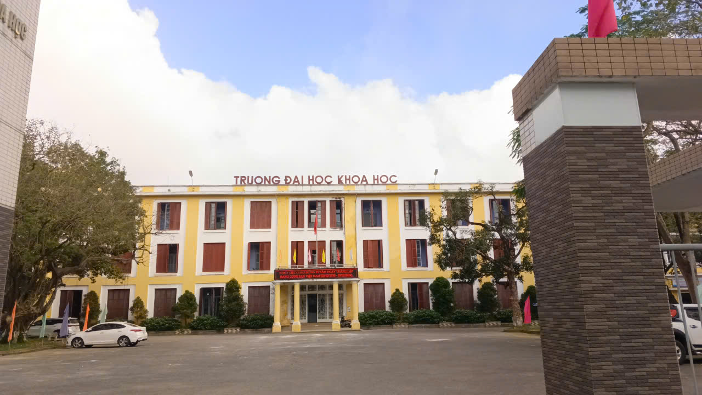
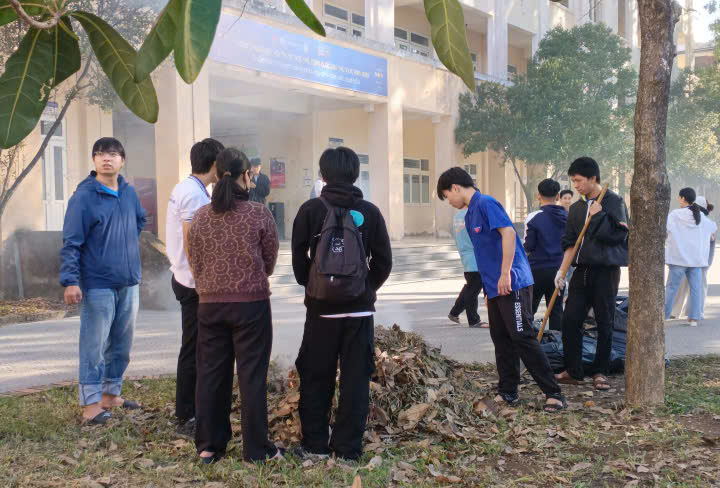
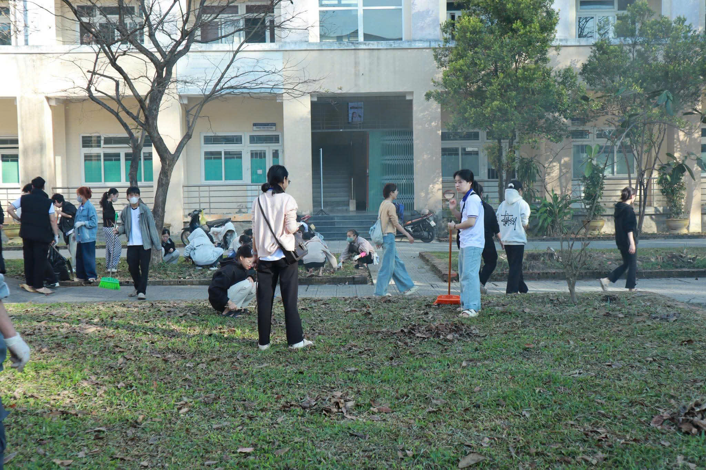
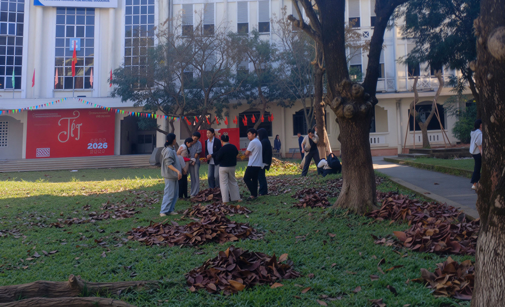
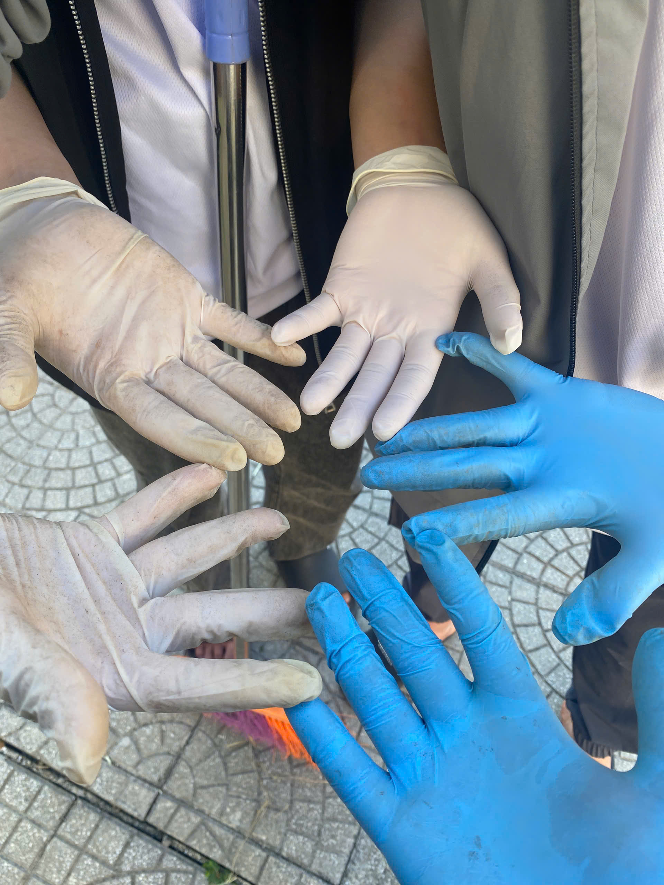

Sáng ngày 31/01/2026, thời tiết se lạnh của những ngày đầu năm, đông đảo đoàn viên, sinh viên Trường Đại học Khoa học, Đại học Huế đã đồng loạt ra quân hưởng ứng phong trào “Chủ nhật xanh” chào mừng năm mới. Hoạt động nhằm phát huy tinh thần xung kích, tình nguyện của tuổi trẻ HUSC trong công tác bảo vệ môi trường, giữ gìn vệ sinh trường lớp và cảnh quan khuôn viên nhà trường.

Đúng 7h30 toàn bộ sinh viên tập trung trước sân trường chuẩn bị dụng cụ và hô vang khẩu hiệu nâng cao tinh thần sức trẻ của sinh HUSC, trong khuôn khổ của chương trình sinh viên được chia thành nhiều nhóm và được phân công dọn dẹp ở nhiều khu vực khác nhau ưu tiên là các khu vực bồn cây khu vực sân trường Không khí lao động diễn ra sôi nổi, nghiêm túc, thể hiện tinh thần đoàn kết và trách nhiệm của sinh viên trong việc chung tay bảo vệ môi trường học đường.
  
Hoạt động “Chủ nhật xanh” kết thúc để lại nhiều điều ý nghĩa, không chỉ mang lại diện mạo khang trang, sạch sẽ cho khuôn viên nhà trường mà còn góp phần nâng cao ý thức trách nhiệm của mỗi sinh viên trong việc bảo vệ môi trường sống xung quanh. Thông qua những việc làm cụ thể như thu gom lá cây, dọn dẹp vệ sinh, phân loại và xử lý rác thải hữu cơ, sinh viên Trường Đại học Khoa học – Đại học Huế đã thể hiện tinh thần xung kích, tình nguyện và trách nhiệm với cộng đồng.

Hoạt động này không chỉ là dịp để các bạn sinh viên chung tay xây dựng môi trường học tập xanh – sạch – đẹp, mà còn lan tỏa thông điệp sống xanh, sống có ý thức đến toàn thể cán bộ, giảng viên và sinh viên trong nhà trường. Tin rằng, với những hành động nhỏ nhưng thiết thực hôm nay, phong trào bảo vệ môi trường sẽ ngày càng được nhân rộng, góp phần xây dựng hình ảnh sinh viên HUSC năng động, văn minh và giàu trách nhiệm, hướng tới một năm mới nhiều khởi sắc và phát triển bền vững của nhà trường